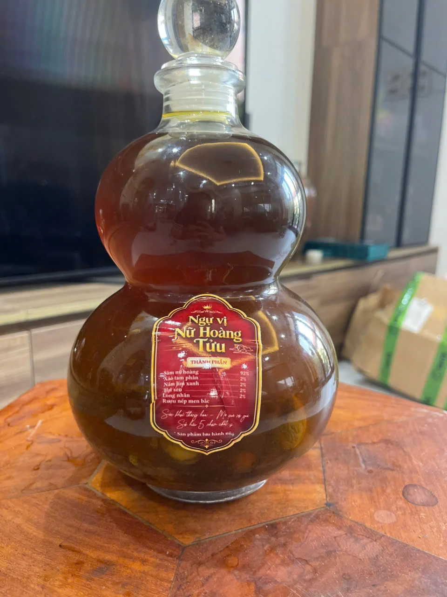

DÒNG RƯỢU SÂM
Ngự Vị Nữ Hoàng Tưu
Khám phá dòng rượu sâm Ngự Vị Nữ Hoàng Tưu qua bộ ảnh bình và chai thực tế.
Thông tin sản phẩm đang được hoàn thiện
- Dung tích
- Đang cập nhật
- Nồng độ cồn
- Đang cập nhật
- Thành phần
- Đang cập nhật
- Giá bán
- Đang cập nhật
Danh sách được lưu trên thiết bị của bạn. Chưa phát sinh đơn hàng hoặc thanh toán.
Dành cho người từ 18 tuổi. Không sử dụng rượu bia khi lái xe.
HÌNH ẢNH THỰC TẾ
Một bộ sưu tập, nhiều góc nhìn.
Thông tin cần biết
Hình ảnh do chủ dự án cung cấp. Các kiểu bình trong ảnh chưa được xác nhận là các mã hàng đang mở bán.
Thành phần, hướng dẫn sử dụng, xuất xứ và các thông tin liên quan sẽ được công bố sau khi có tài liệu xác nhận từ doanh nghiệp.